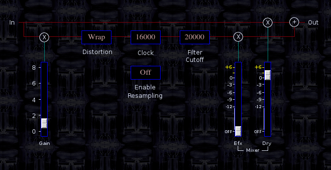

Crusher
 Previous( Chronos Delay )
Next( flngr Flanger )
Home
Contents
Synth Catalog
Previous( Chronos Delay )
Next( flngr Flanger )
Home
Contents
Synth Catalog
Crusher is a distortion and resampler effect.
- Gain slider - pre clipper gain.
- Distortion button - select clipping type. The clipper output is restricted to +/-1.
- Clock button - down sampler sample rate.
- Enable Resampling button.
- Filter Cutoff - static lowpass cutoff.
- Efx mix.
- Dry mix.
Busses
- inbus - audio input
- outbus - audio output
Parameters
- gain - pre-clipper gain
- wave - clipper select (0=None, 1=Soft, 2=Distort, 3=Fold, 4=Wrap)
- clockFreq - resampler frequency in Hertz (1k,2k,3k, ..., 16k)
- resamplerEnable - (0 = off, 1 = on)
- low - lowpass filter cutoff (500,1k,2k,4k,8k,10k,20k)
- wet - wet signal mix (0 ... 2)
- dry - dry signal mix (0 ... 2)
- amp - output gain (0 ... 2)
Previous( Chronos Delay ) Next( flngr Flanger ) Home Contents Synth Catalog